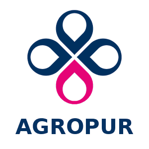
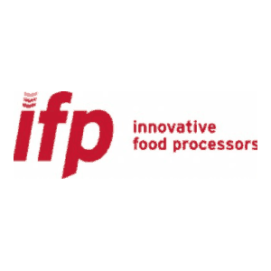

Andrew Bokman
Manufacturing Operations Specialist
15+ years in food manufacturing and process operations across continuous, batch and multi-line production.
Experienced in leading day-to-day production, troubleshooting abnormal conditions and training operators.
Progression
-
Distribution
Full-case order selection in a high-volume distribution center.
2006 – 2008 -
Food processing
Set up, ran and cleaned dry-food powder equipment.
2008 – 2012 -
Meat processing
Meat cutter to apprentice butcher to manager of a custom meat shop.
2012 – 2019 -
Line leadership
Processing operator, then led a cereal line directing 4–5 operators.
2019 – 2024 -
Plant operations
Cross-trained across a continuous cheese and whey plant.
2026 – Present
Profile
I’ve run production in a custom meat shop, on a multi-product cereal line, and now across a cheese and whey plant.
On the floor
I work as a Resource Operator II at Agropur, a cross-trained operator in a continuous cheese and whey plant on 12-hour night shifts. Before that I spent five years at Post Consumer Brands, promoted from Processing Operator to Processing Specialist.
My work covers startups, changeovers and shutdowns, process monitoring and troubleshooting, CIP and sanitation, aseptic sampling and testing, lockout/tagout and confined-space work, SAP, and the Wonderware HMI.
Leading and training
At Post I led day-to-day processing and directed 4–5 operators per shift. At Herda’s I ran the shop when the owner was away, directing 2–3 employees and planning weekly production with him.
At Agropur I train operators and provide fill-in supervisory coverage.
Experience
From the warehouse floor to continuous process operations.
Eight roles at five employers since 2006, most recent first. Open a row for the detail.
Current

Agropur
Continuous cheese and whey manufacturing.
Resource Operator II
- Cross-trained operator in a continuous cheese and whey plant on 12-hour 2-2-3 night shifts; independently qualified to run intake, HTST, make room (EFVs, ACVs), bulk starter room and packaging; train operators and provide fill-in supervisory coverage.
- Monitor and control silo levels, pumps, product flow and process conditions in Wonderware; switch silos and reconfigure pipe and hose connections for product routing and CIP.
- Take frequent process readings and make operating adjustments; monitor whey, permeate and lactose flows; troubleshoot at operator level, escalate equipment problems to maintenance and hand off open issues at shift change.
- Receive tankers at intake: collect aseptic samples, verify temperatures and perform antibiotic testing; Industry Analyst certified; State of Minnesota–certified in bulk-hauler aseptic dairy sampling; complete final weights, SAP entries and traceability records.
- Run CIP on tankers, silos and process circuits; perform Master Sanitation work, titrations, micro and analytical sampling, and pre-operational checks.
- Areas
- Intake, HTST and packaging, bulk starter room, make room
- Product streams
- Raw milk, UF milk, cream, whey cream, mother liquor, permeate
- Systems
- Wonderware HMI, SAP
Post Consumer Brands
Cereal manufacturing.Processing Specialist Led processing on a multi-product cereal line, directing 4–5 operators.
- Led day-to-day processing on a multi-product cereal line producing 55,000–65,000 lb of finished product per 12-hour shift, directing 4–5 operators.
- Operated and troubleshot cereal-processing equipment including jet zones, mill rolls, slurry/coating systems, dryers, feeders, extruders, puffing guns and shredded-wheat equipment; planned startups, changeovers and shutdowns.
- Set production pace by weighing equipment condition, process stability, product quality, inventory and remaining targets, coordinating with maintenance, packaging and other departments to maintain production flow.
- Troubleshot issues across the entire processing phase, diagnosing equipment, process, product-quality and flow problems to restore stable production.
- Read mill behavior from how feed, roll condition, nip pressure, temperature and operating rate interact.
- Trained and coached processing operators on equipment, process and troubleshooting.
- Campaigns
- Corn Flakes, Sugar Frosted Flakes, Honey Bunches of Oats and Honey Bunches of Oats with Almonds, run between major cleans
- Plant coverage
- Signed off on three processing phases; ran equipment in all three business units
- Promoted
- From Processing Operator, 2021
Processing Operator Multi-stage cereal processing; promoted to Processing Specialist in 2021.
- Operated feeders, flaking mills, dryers and downstream equipment on a multi-stage cereal line through startups, changeovers and shutdowns.
- Monitored the process from the HMI and responded to alarms, process deviations and equipment faults at operator level.
Herda’s Meat Processing
Custom beef and pork processing.Manager Daily operations, production planning and customer orders.
- Ran day-to-day shop operations when the owner was absent, directing 2–3 employees and coordinating production, customer orders, pickups and payments.
- Planned weekly production with the owner, scheduled cattle and hog processing within shop capacity, trained employees and managed changing daily priorities.
- Performed the full processing operation hands-on, including slaughter, aging, carcass breakdown, custom cutting, grinding, sausage and bacon production, packaging, sanitation and equipment operation.
- Opened the shop and started daily production before the owner arrived; made farm visits to help judge when cattle were ready for processing.
- Products
- Custom beef and pork cuts, ground meat, sausage, cured and smoked bacon
- Crew
- 2–3 employees
Apprentice Butcher Cutting to customer specifications; progressed to independent cutting work.
- Developed proficiency in knife handling and sharpening and the safe operation of saws and meat-processing equipment while progressing to independent cutting work.
- Followed customer cut specifications while inspecting meat quality, controlling yield and minimizing product waste.
- Maintained food-safety standards for sanitation, temperature control, storage and traceability throughout processing.
- Received, weighed, packaged and labeled meat products and tracked inventory.
- Learned curing, smoking and preservation methods, along with merchandising and customer service.
Meat Cutter Carcass breakdown, deboning, portioning and grinding.
- Broke down whole carcasses into primals and subprimals.
- Deboned, trimmed, sliced and portioned meat into standard retail cuts.
- Ground meat and prepared hamburger, sausage and other processed products.
- Built knowledge of beef and pork anatomy, cutting methods and fabrication.

Innovative Food Processors
Dry-food and powder processing.
Processing Operator
- Set up, ran and cleaned dry-food powder-processing equipment; calculated production-order quantities and yields.
- Handled raw materials and finished product and supported material and warehouse movement.
McLane Order selection in a high-volume distribution center. Selector
- Selected full-case orders, scanning labels to confirm slot, product and quantity; built pallets and moved them to the dock with powered equipment.
- Worked to order-accuracy and safety requirements, preventing injury and product damage.
Skills
Skills, equipment and systems.
What I do on a line, grouped by kind of work, then the equipment and processes I’ve run plant by plant, and the systems I use.
-
Operations
-
Troubleshooting
-
Sanitation and testing
-
Quality and safety
-
Leadership and training
-
Meat processing
Equipment and processes
Plant by plant- Continuous dairy
- High-volume cereal
- Custom meat
- Dry-food powders
- Distribution
Systems and safety
Operator-level use- HMI Wonderware Process monitoring and control at Agropur.
- ERP SAP Receiving transactions and records at Agropur.
- Safety Lockout/tagout, confined space, GMP At Agropur and Post.
Education
Education and certification.
Contact
Contact
Glad to hear from people in manufacturing, food processing and plant operations. Email is the quickest way to reach me.
- Email a_bokman@proton.me
- Profile LinkedIn
- Résumé Download PDF